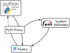

The self-abolition of Enterprise Linux Distributions
who -u
Dan Čermák
| Software Developer @SUSE, SLE BCI releng | |
| i3 SIG, Package maintainer | |
| Developer Tools, Testing and Documentation, Home Automation | |
| https://dancermak.name | |
| dcermak | |
| @Defolos@mastodon.social |
Agenda
Where did we start?
- Pet servers
- Software runs from system packages
- long development cycles
- setup, never touch again & forget machines
Where are we now?
- Cattle servers
- Rapid development
- Much larger dependency tree
- Container deployment
but "the old way" is still there
What's the problem?
- LTS maintenance harder/more expensive
→ reduce package set
→ update packages during LTS
- We cannot package the world
The vicious cycle
- fewer and outdated packages + missing dependencies
- less interesting development target
- less interesting deployment target
- fewer users
- less üí∞ for development
GOTO 1
Containers to the rescue!

Modularity to the rescue!
Let's build a Lego-style distro!


So should we just give up?
But we are still adding value
❯ podman run --rm -it docker.io/aquasec/trivy \
image docker.io/library/golang:1.21
docker.io/library/golang:1.21 (debian 12.4)
Total: 349 (UNKNOWN: 0, LOW: 245, MEDIUM: 74, HIGH: 29, CRITICAL: 1)
❯ podman run --rm -it docker.io/aquasec/trivy \
image registry.suse.com/bci/golang:1.21
registry.suse.com/bci/golang:1.21 (suse linux enterprise server 15.5)
Total: 0 (UNKNOWN: 0, LOW: 0, MEDIUM: 0, HIGH: 0, CRITICAL: 0)
Integrations & Support
Build Tools
 |
Ways forward?
Devtools
Focus on development tools!

Limited Modularity
Modularity again?

Commercial Break
Do you have to edit RPM Spec files?
Annoyed by poor editor support?

Links
github.com/dcermak/self-abolishment-of-enterprise-linux-distro